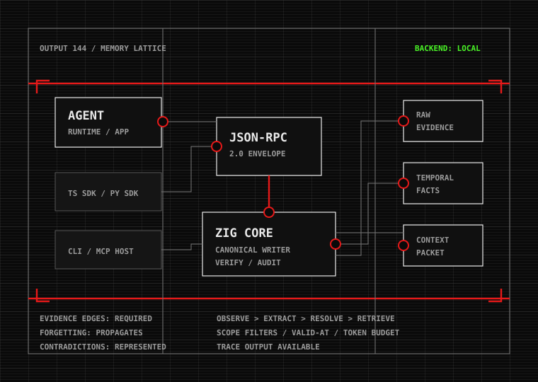

Agent runtime
Apps, local agents, CLI workflows, and MCP hosts submit memory operations without owning database semantics.
TYPE / CLIENT EDGE
[ MEMORY OPERATING LAYER ]
Evidence-backed temporal memory for long-horizon agents.
A local Zig runtime that captures raw interaction evidence, derives scoped facts and procedures, preserves contradictions, propagates forgetting, and returns compact context packets through JSON-RPC.
[ SYSTEM / 001 ]
Quipu treats memory as a transactional operating layer: observe, store evidence, extract candidates, resolve entities, update temporal facts, link memories, consolidate, retrieve, evaluate, and forget with propagation.
[ BLUEPRINT / CANONICAL ]
Apps, local agents, CLI workflows, and MCP hosts submit memory operations without owning database semantics.
TYPE / CLIENT EDGETypeScript and Python validate inputs, find or call the runtime, and return typed protocol results.
MODE / VALIDATE + FORWARDThe native runtime owns extraction, retrieval planning, forgetting, audit, verification, and context assembly.
AUTHORITY / CANONICAL WRITERIn-memory and optional LatticeDB adapters expose graph-like records, evidence edges, search, streams, and verification.
SUBSTRATE / LOCAL FILE[ PROTOCOL / JSON-RPC ]
[ MEMORY / INVARIANTS ]
[ STATUS / CURRENT BUILD ]
[ EVALS / VERIFICATION ]
[ START / LOCAL PROCESS ]
cd core
zig build
./zig-out/bin/quipu healthprintf '%s\n' '{"jsonrpc":"2.0","id":"1","method":"system.health","params":{}}' \
| ./zig-out/bin/quipu rpc-stdin